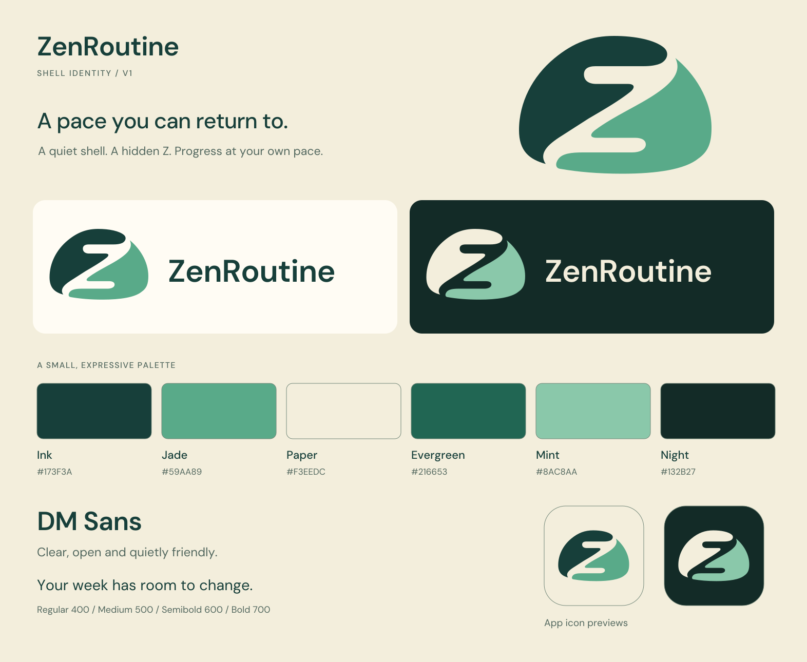
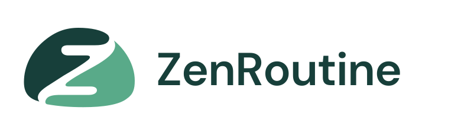
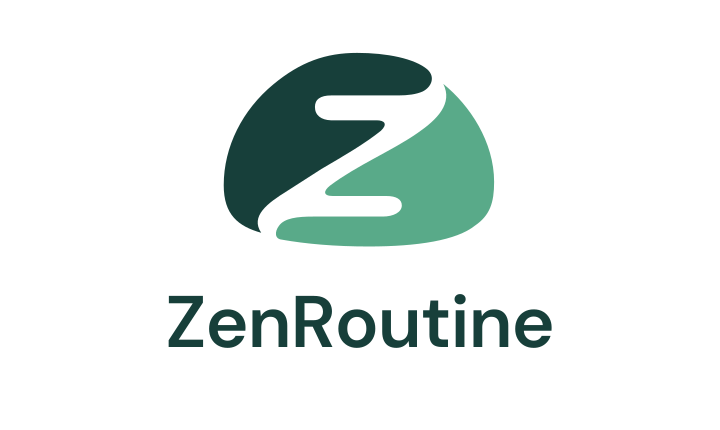
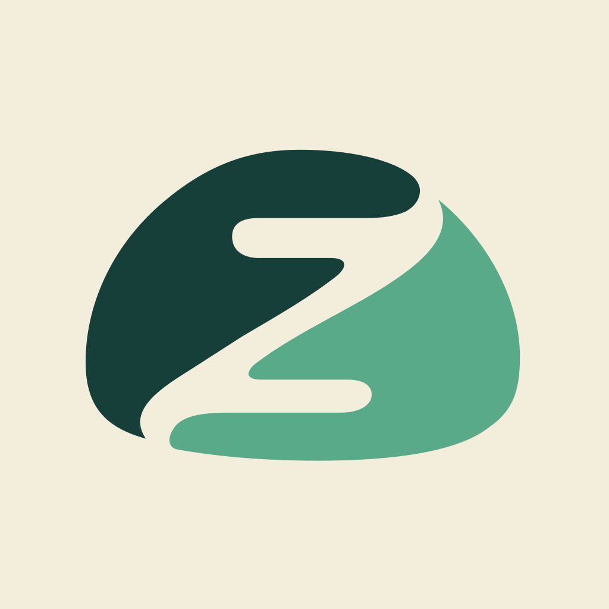
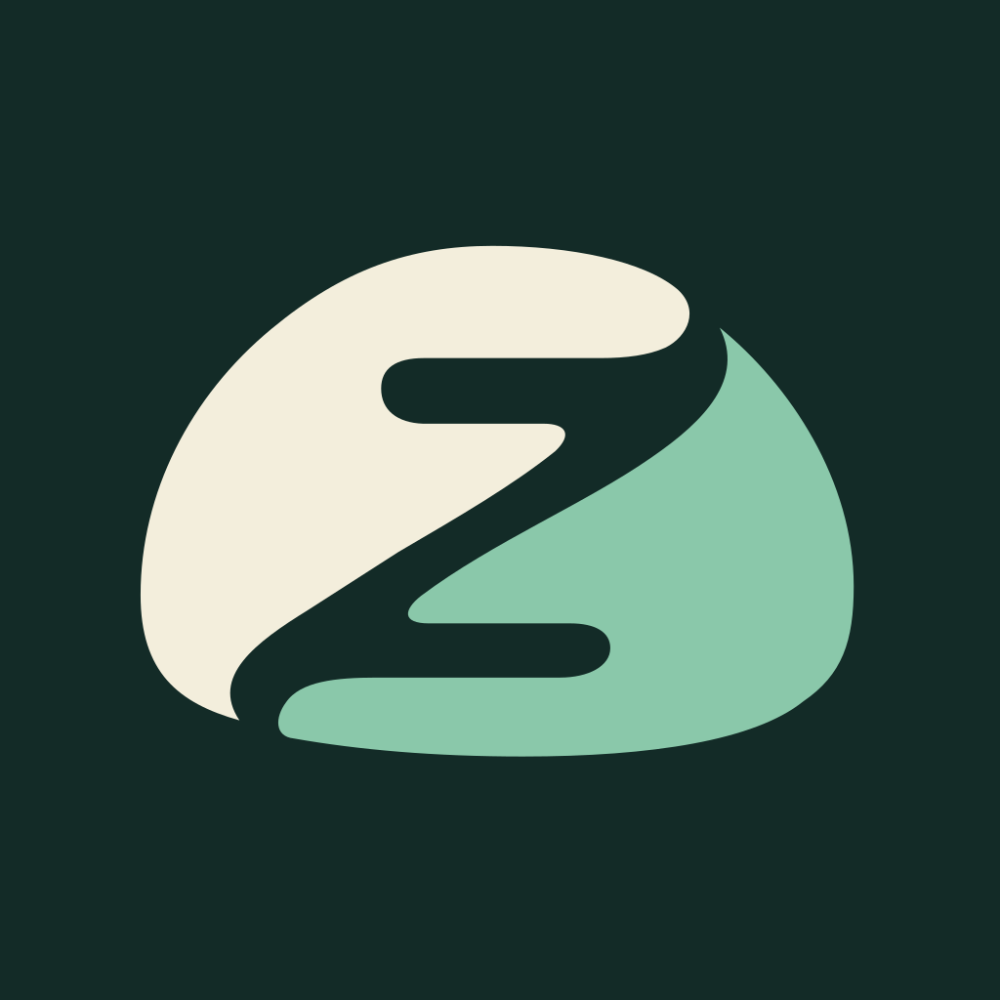
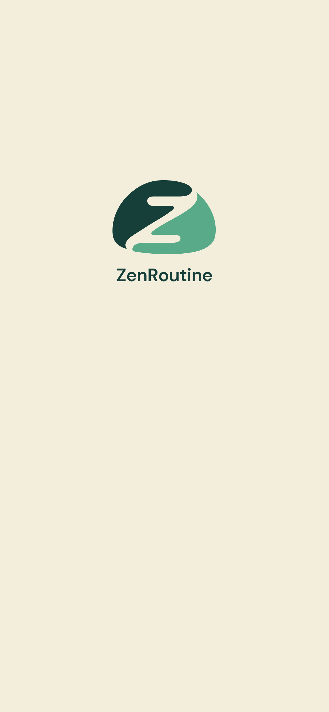
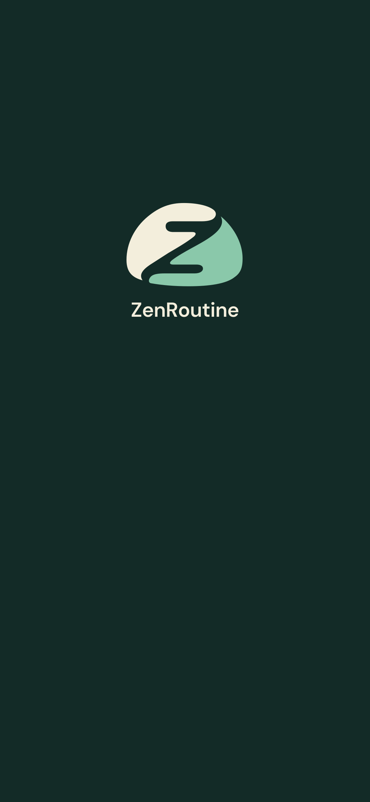
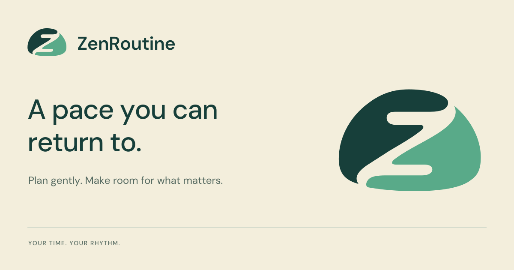

ZenRoutine / Shell identity
A pace you can return to. A geometric shell with an open Z, paired with warm paper, deep teal and clear, friendly type.
Brand guide · Implementation handoff · Theme tokens

Logo lockups




App icon and small-size checks


Rounded corners above simulate the OS mask. Production app icons are opaque squares. The favicon uses slightly larger artwork.
Splash direction


Use the separate transparent splash-mark PNGs in native configuration. These full-screen compositions are visual references.
Social sharing / 1200 × 630

Ready for implementation
The kit includes local DM Sans fonts and their licence, exact light/dark tokens, outlined vector masters and PNG exports. The app code has not been changed. The handoff describes integration and verification, including preserving user activity colours.